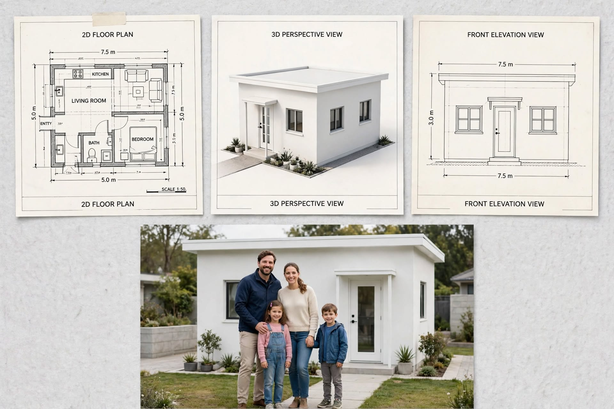

SMALL HOUSE PLANS · ARTICLE 11
Very Small One-Bedroom White House – 7.5 m × 5 m Concept
A compact one-bedroom white house concept with a flat roof, simple front elevation and essential living spaces.

This guide reviews the supplied image as a design concept. It separates what is visibly stated in the drawing from items that still need professional measurement and confirmation.
1. A Minimal Essential-Needs Layout
The drawing shows a small one-bedroom home with a living room, kitchen, bathroom and a compact sleeping area. The exterior uses a simple white rectangular form and a flat roof. This type of concept prioritises essential rooms and a straightforward building shape, but the plan must be dimensionally corrected before any area or room-size claim is relied on.
2. Dimensional Issue to Resolve
The top dimension line reads 7.5 m, while the bottom line appears to read 5.0 m. The side dimensions indicate 5.0 m. A rectangular building should have matching top and bottom widths, so the drawing needs correction. If the intended footprint is 7.5 m × 5.0 m, the gross rectangle would be 37.5 m², but this is only a conditional calculation, not a confirmed area.
3. Furniture Planning in a Tiny Home
Use a compact bed and a wardrobe with sliding doors if the final bedroom is tight. In the living area, a small two-seat sofa or bench and wall-mounted storage may preserve circulation. Choose a dining solution that can fold or serve as a work surface. Avoid placing furniture in front of the entrance, bathroom door or kitchen work zone.
4. Kitchen and Bathroom
The kitchen should be designed around a short, efficient counter with a sink, preparation surface, cooktop and refrigerator. Confirm safe clearances and ventilation. The bathroom needs a practical toilet, basin and shower arrangement, a waterproofed wet area and a floor drain. Because the house is very compact, door swings and fixture positions must be tested carefully on a scaled drawing.
5. Flat Roof and Front Elevation
The front elevation is a simple white facade with a central entrance and two windows. A flat roof can create a clean modern appearance, but it requires engineered structure, positive drainage falls, waterproofing, overflow provisions and maintenance access. The front windows should be placed for privacy and daylight without overheating the interior. Use exterior finishes suitable for rain, humidity and sun exposure.
Construction, Services and Budget Planning
Before construction, confirm the site boundaries, access, levels, soil conditions and approval requirements. A qualified local professional should prepare the measured architectural and structural drawings. The normal sequence is setting out, foundations, floor and wall construction, roof installation, first-fix plumbing and electrical work, plastering, waterproofing, doors and windows, finishes, testing and final inspection.
Prepare a project-specific bill of quantities rather than relying on a generic online price. Include excavation, concrete, reinforcement, blocks or bricks, roof materials, doors, windows, plumbing, electrical work, waterproofing, flooring, paint, labour, transport, approvals and a contingency. Actual costs in Sri Lanka vary by district, access, soil, specification, supplier and quotation date.
Important Professional Checks
- Verify all external and internal dimensions on a scaled drawing.
- Coordinate door swings, window openings, furniture clearances and circulation.
- Have foundation, columns, beams, lintels and roof structure designed for the site.
- Plan safe electrical circuits, earthing, water supply, drainage and ventilation.
- Check local planning rules, setbacks, approvals and applicable building standards.
Disclaimer: This article explains an illustrative design concept. It is not an architectural, structural, engineering or cost-certified document and must not be used alone for construction.